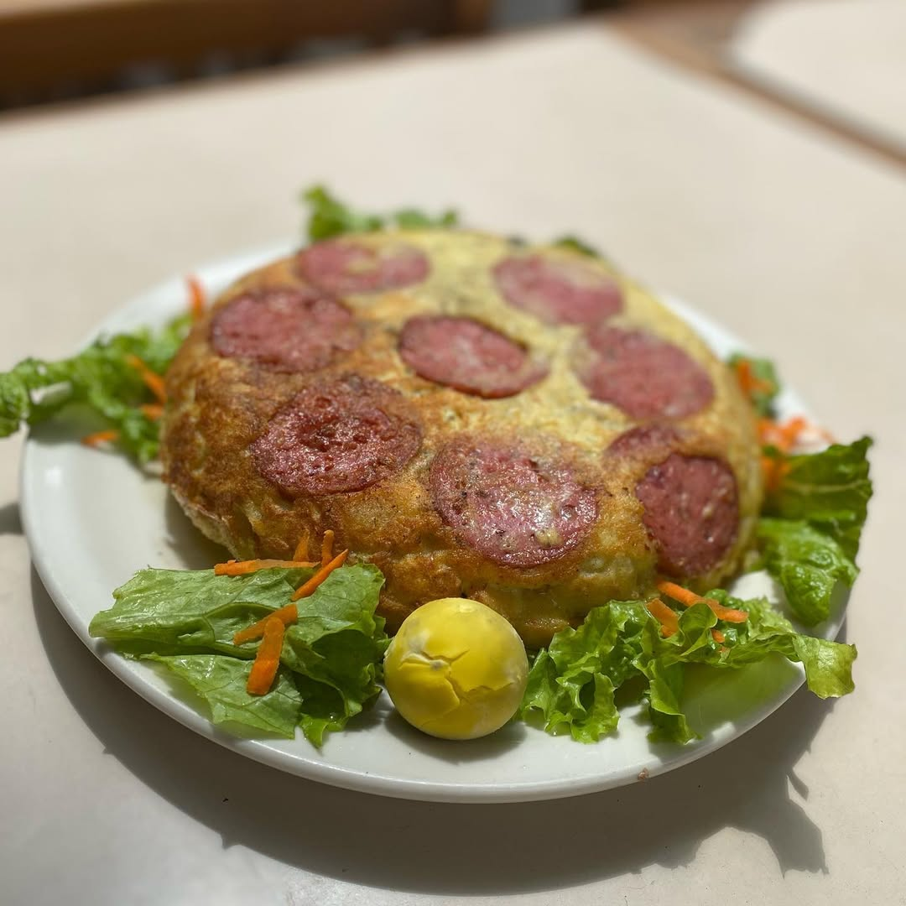

Disfrutá de la auténtica experiencia del asado argentino con nuestro Bife de Chorizo Clásico. Un corte grueso, jugoso y sabroso, cocido al punto justo para resaltar todo su sabor. Acompañado de papas rústicas, chimichurri casero y una guarnición de vegetales grillados. Servido sobre una tabla de madera noble que realza su presentación. Ideal para un verdadero amante de la carne.

🥔 Tortilla Española Clásica
La tradicional receta ibérica con todo el sabor casero. Nuestra Tortilla Española Clásica está hecha con papas doradas, chorizo colorado, huevos frescos y cebolla salteada, cocida lentamente hasta alcanzar el punto justo. Servida en bandeja caliente, acompañada por ensalada fresca, pan casero y aceite de oliva virgen extra.
🥞 Panqueque con Caramelo y Crema
Dulzura en su forma más clásica. Nuestro panqueque casero está bañado en caramelo dorado y acompañado con un copo generoso de crema batida. Servido tibio, es el final perfecto para cualquier comida, inspirado en los postres tradicionales de bodegón.